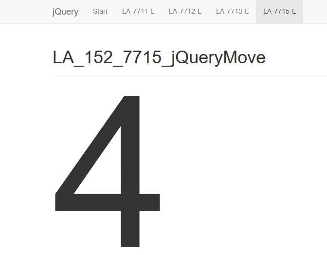
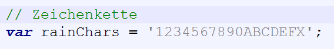
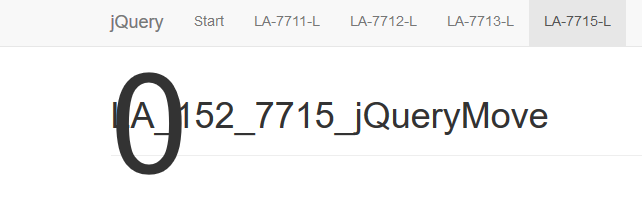

jQuery Move Aufgabe
Aufgabenstellung
1) Analysieren Sie, wie der bewegte Text entsteht. Übernehmen Sie diese Informationen in Ihre Projektwebseite.
This text is moving!
2) Erstellen Sie eine Seite, die ein zufälliges Zeichen von oben herabregnen lässt.
Die Zeichenkette kann wie folgt gespeichert werden:
Wenn das Zeichen beginnt, von oben herabzufallen, muss es immer die Grösse «1em» haben, die sich immer weiter erhöht, wenn das Zeichen runterfällt.
Lösung
A